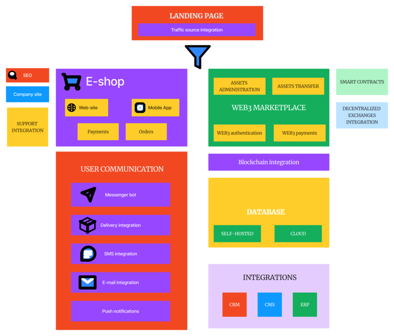

Enabling Technological Advancement: Your IT Solution Architects
Welcome to a realm where code meets creativity, and technical prowess
merges seamlessly with business objectives. We are a team of IT
specialists, adept in a spectrum of technologies, ready to architect
solutions that transcend the ordinary.
Our Technical Expertise:
-
End-to-End Web Development: Crafting websites and web
applications from scratch, we specialize in both frontend and backend
development, ensuring a cohesive and robust digital presence.
-
Mobile Application Development: Our proficiency extends
to non-gaming mobile applications, employing frameworks and languages
that guarantee performance, scalability, and a superior user experience.
-
Integration Mastery: Seamlessly integrate diverse
systems, be it 1C, CRM, CMS, or ERP, using robust APIs and middleware.
Our focus is on creating interconnected ecosystems that enhance
operational efficiency.
-
Custom System Solutions: From building CMS and CRM
systems from the ground up to tailoring existing systems for optimal
performance, we navigate the intricacies of system architecture with
precision.
-
Blockchain and Smart Contracts Implementation: Dive
into the decentralized world with our expertise in Solidity smart
contracts. We design and implement blockchain solutions that ensure
secure and transparent transactions.
-
Web3 Integration and Decentralized Architectures:
Empower your applications with Web3 capabilities. Our proficiency spans
decentralized marketplaces, payment services, and integrating blockchain
functionality into frontend and backend systems.
-
SEO-Driven Development: Elevate your website's
visibility with SEO optimization techniques. We analyze performance
metrics, implement SEO best practices, and ensure your digital assets
rank prominently in search engine results.
-
Cross-Platform Desktop Applications: Harness the
capabilities of desktop applications using dotnet for Windows platforms.
Additionally, we leverage universal frameworks like Electron for
developing cross-platform desktop solutions.
Why Choose Our Technical Expertise:
In the fast-evolving landscape of technology, partnering with us means
gaining access to a team deeply immersed in the technical intricacies of
IT. We don’t just build solutions; we architect robust systems that align
with your technical vision and business goals.
Choose us, and let's redefine technical excellence together.
Technical Expertise In One Picture
